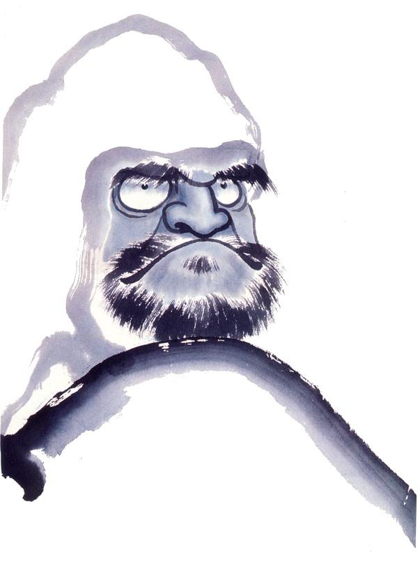

“To study the Buddha Way is to study the self. To study the self is to forget the self. To forget the self is to be verified by all things.”
Instruction
The Practice of Zazen
Zazen — seated meditation — is the core practice of Soto Zen Buddhism. Unlike concentration or visualization techniques, zazen in the Soto tradition is shikantaza: “just sitting.” It is not a means to an end, but the practice itself is realization.
Posture
Sit on a zafu (round cushion) placed on a zabuton (flat mat), facing the wall. The traditional postures are:
- Full lotus (kekkafuza) — Each foot placed on the opposite thigh.
- Half lotus (hankafuza) — One foot placed on the opposite thigh, the other tucked beneath.
- Burmese position — Both feet on the mat, one in front of the other.
- Seiza (kneeling) — Using a bench or cushion between the legs.
The spine is straight, the chin slightly tucked, and the crown of the head reaches toward the ceiling. The eyes remain half-open, gaze directed downward about three feet ahead.
Hands
Place the left hand on top of the right, palms up, with the tips of the thumbs lightly touching — forming the cosmic mudra (hokkaijōin). The hands rest against the lower abdomen.
Breathing
Breathe naturally through the nose. The emphasis is on a long, gentle exhalation that extends from the hara (lower abdomen). Do not try to control the breath — simply let it settle into its natural rhythm.
Mind
In shikantaza, there is no object of meditation. Thoughts arise and pass — do not pursue them, do not push them away. As Master Deshimaru taught: “Let thoughts pass like clouds in the sky.” This is hishiryo — thinking beyond thinking and not-thinking.
The posture itself is the practice. By sitting with correct posture and breathing, the mind naturally settles. This is mushotoku — practice without seeking profit or gain.
